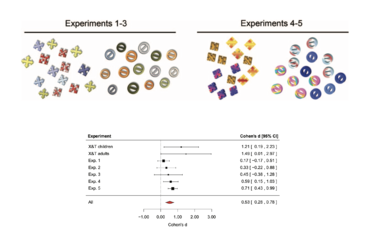

Chapter 2 Replication and reproducibility
🍎 Learning goals:
- Define the distinction between reproducibility and replicability
- Consider types of replication
- Understand the “crisis” narrative in psychology and the empirical evidence supporting it
- Reason about the relation of replication to theory building
In the previous chapter, we gave a sober and considered introduction to the topic of experiments, their connection with causal inference, and their role in building psychological theory. In this chapter we’re going to change gears a little bit and tell the story of the period from 2011 – 2021 and how it has given rise to a number of “crisis” narratives in psychology.
In order to set the terms of discussion, we need to describe some of the outcomes we are interested in. Figure 2.1 gives us a basic starting point for our definitions.1 These terms have been a bit of a problem for the field, at least at first, but it seems like people have been agreeing on them recently. For some claim in a paper, if we can take the same data that were analyzed in that paper, do the same analysis, and get the same result, we call that result reproducible (sometimes, analytically or computationally reproducible). If we can collect new data in the same experiment, do the same analysis, and get the same result, we call that a replication and say that the experiment is replicable. If we can do a different analysis with the original dataset, we call this a robustness check and so if a claim passes it is robust.2 These are less common in experimental psychology, but are very common in fields that work with large, complex observational datasets like sociology. And if the same finding obtains in a different population, perhaps with a different analysis, the result is likely to be more generalizable beyond the initial conditions in which it was observed.3 You might have observed that a lot of work is being done here by the word “same.” How do we operationalize same-ness for experimental procedures, statistical analyses, or samples? These are difficult questions that we’ll address in part below, but there’s no single answer and so these terms are always going to helpful guides rather than exact labels.
.](images/replication/terms.png) Figure 2.1: A terminological framework for meta-science discussions. Based on https://figshare.com/articles/Publishing_a_reproducible_paper/5440621.
Figure 2.1: A terminological framework for meta-science discussions. Based on https://figshare.com/articles/Publishing_a_reproducible_paper/5440621.
We’re also going to abandon the sober tone of the introduction and try to get you a bit worked up. From an empirical perspective, things have been far from ideal in the psychology literature. Many classic findings may be wrong, or at least overstated. Their statistical tests are probably not trustworthy. The actual numbers are even wrong in many papers! And even when experimental findings are “real” they may not reflect deep psychological generalizations. And even if they do, they likely don’t reflect generalizations that are true about people in general, only some very specific groups of people. Your hair should be on fire, at least a little bit. If you by the end of this chapter, you don’t feel a little bit of despair about the published psychological literature, then we haven’t done our job.
On the other hand, you might be thinking, how do you know that all this bad stuff is true? Claims about a literature or field as a whole go beyond the kind of standard paradigmatic science that we were talking about in the previous chapter – instead they are part of a new field called meta-science. Meta-science research is research about research, for example investigating the rate of replication in a literature, or trying to figure out how widespread some negative practice is within a sub-field. Meta-science allows us to go beyond one-off anecdotes about particular results or rumors about bad practices. Critically, we can also evaluate the strength of claims about the field using the same tools we use to evaluate standard research – that is, we can critique research designs and inferences systematically, rather than just accepting (or failing to accept) assertions.
In this chapter, we’ll discuss reproducibility and replicability primarily – discussions of robustness and generalizability will be taken up in Chapters 6 and 9 respectively. We’ll start out by reviewing some of the key concepts around reproducibility and replicability as well as the key meta-science findings. This literature suggests that when you read an average psychology paper, your expectation should be that it will only replicate around half the time!
We’ll then discuss some of the proposed sources of problems in replicability – especially analytic flexibility and publication bias. We end by taking up the issue of how reproducibility and replicability relate to theory building in psychology. To summarize, our view is that reproducibility and replicability are critical foundations for theory building – they are necessary but not sufficient for good theories.
🔬 Case study: The Open Science Collaboration
Around 2011, we were teaching our Experimental Methods course for the first time, based on a course model that we had worked on with Rebecca Saxe (Frank and Saxe 2012Frank, Michael C, and Rebecca Saxe. 2012. “Teaching Replication.” Perspectives on Psychological Science 7: 595–99.). The idea was to have a replication-based course that introduced students to the nuts and bolts of research.4 One of the current author team was a student in the course that year! A guy named Brian Nosek was on sabbatical nearby, and over coffee we learned that he was starting up an ambitious project to replicate a large sample of studies from top psychology journals in 2008.
Students in Experimental Methods that year chose replication projects from the sample that Nosek had told us about. Four of these projects were done at a high standard and were nominated by the course TAs for inclusion in the broader project on the basis of strong implementations of the paradigm and good sample sizes. A few years later, when the final group of 100 replication studies was completed, we got a look at the results, shown in Figure 2.2.
Figure 2.2: Results from the Open Science Collaboration (2015). Each point represents one of the studies in the sample, with the horizontal position giving the original effect size and the vertical position giving the replication effect size. Dot size shows estimated statistical power. The dotted line represents a perfect replication.

The resulting meta-science paper, which we and others refer to as the “replication project in psychology” (RPP) made a substantial impression on both psychologists and the broader community, defining both a field of psychology meta-science studies and providing a template for many-author collaborative projects (Collaboration 2015Collaboration, Open Science. 2015. “Estimating the Reproducibility of Psychological Science.” Science 349 (6251).). But the most striking thing was the result: disappointingly, by several different criteria, only around a third of studies showed the same finding as the original. The others yielded smaller effects that were no significant in the replication sample. This study provided the first large-scale evidence that methodological issues in the psychological literature might lead to a bad outcome in the literature – namely a literature with many findings that didn’t replicate.
RPP’s results – and their interpretation – were controversial, however, and much ink was spilled on what these data showed. In particular, critics pointed to different degrees of fidelity between the original studies and the replications; insufficient levels of statistical power in the replications; non-representative sampling of the literature; and difficulties identifying specific statistical outcomes for replication success (Gilbert et al. 2016Gilbert, Daniel T, Gary King, Stephen Pettigrew, and Timothy D Wilson. 2016. “Comment on ‘Estimating the Reproducibility of Psychological Science’.” Science 351 (6277): 1037–37.; Anderson et al. 2016Anderson, CJ, S Bahnik, M Barnett-Cowan, FA Bosco, J Chandler, CR Chartier, and otherss. 2016. “Response to Comment on ‘Estimating the Reproducibility of Psychological Science’.” Science 351 (6277): 1037–37.). In our view, many of these critiques have merit, and you can’t simply interpret the results of this study as an unbiased estimate of the replicability of results in the literature, contra the title.5 Confusingly, the title of the paper is “Estimating the reproducibility of psychological science,” not “the replicability of psychological science.” This caused terminological confusion for several years; it seems like at this point people have decided it’s just a mistake.
And yet, RPP’s results are still important and compelling, and they undeniably changed the direction of the field of psychology. Many good studies are like this – they have critical flaws but they lead the way towards other studies that pursue this new direction, often with greater technical precision and fewer issues. For several of us personally, working on this project was also transformative in that it showed us the power of collaborative work – together we could do a study that no one of us had any hope of completing on our own, and potentially make a difference in our field.
2.1 Reproducibility
As one of their primary purposes, scientific papers report measurements, statistical results, and more complex analytic findings and visualizations. For these results to be subject to scrutiny, readers and reviewers need to be able to access some aspects of the set of steps from the original raw measures all the way to the final products. For much of the history of the scientific paper, complete verification of the provenance of a particular reported number in a paper was impossible – at best, a reader was presented with a verbal or mathematical description of the computations that were performed on the raw data, and the raw data themselves were not available.6 In practice, for many years data have been available “on request,” and professional societies like the American Psychological Association have mandated data sharing for purposes of verification. But in practice data are rarely made available (Wicherts et al. 2006Wicherts, Jelte M, Denny Borsboom, Judith Kats, and Dylan Molenaar. 2006. “The Poor Availability of Psychological Research Data for Reanalysis.” American Psychologist 61 (7): 726.). We believe this is untenable, and we provide a longer argument justifying data sharing in Chapter 3 and discuss some of the practicalities of sharing in Chapter 13.
Data sharing (and the sharing of analytic code) is increasing, and we believe this is a very good thing for science as a whole.7 Psychology still likely lags behind other fields, however (Tedersoo et al. 2021Tedersoo, Leho, Rainer Küngas, Ester Oras, Kajar Köster, Helen Eenmaa, Äli Leijen, Margus Pedaste, et al. 2021. “Data Sharing Practices and Data Availability Upon Request Differ Across Scientific Disciplines.” Scientific Data 8 (1): 1–11.). But because sharing has been relatively limited in the past, the reproducibility of numbers in nearly all published papers cannot be checked, leaving open a number of negative possibilities. Most prominently, errors in calculation or reporting could lead to disparities between the reported result and the actual result. Mis-specification of analytic computations could mislead readers about the computations that were actually performed. And the robustness of analyses cannot be checked.8 We’re focusing on data sharing here, because much experimental research uses relatively straightforward analyses. But the same points apply to code sharing as well! In computational research, the relevant position is nicely summed up by a prescient quote from Buckheit and Donoho (1995)Buckheit, Jonathan B, and David L Donoho. 1995. “Wavelab and Reproducible Research.” In Wavelets and Statistics, 55–81. Springer.: “An article about computational science in a scientific publication is not the scholarship itself, it is merely advertising of the scholarship. The actual scholarship is the complete software development environment and the complete set of instructions which generated the figures.”
Are errors common? There are plenty of individual instances of errors that are corrected in the published literature (e.g., Cesana-Arlotti et al. 2018Cesana-Arlotti, N, A Martı́n, E Téglás, L Vorobyova, R Cetnarski, and L L Bonatti. 2018. “Erratum for the Report ‘Precursors of Logical Reasoning in Preverbal Human Infants’.” Science 361 (6408).), and we ourselves have made significant analytic errors (Frank et al. 2013Frank, Michael C, Jonathan A Slemmer, Gary F Marcus, and Scott P Johnson. 2013. “" Information from Multiple Modalities Helps 5-Month-Olds Learn Abstract Rules": Erratum.”). But these kinds of experiences don’t tell us about the frequency of error (or the consequences of error for the conclusions that researchers draw).9 There is a very interesting discussion of the pernicious role of scientific error on theory building in Gould, Gold, and others (1996)Gould, Stephen Jay, Steven James Gold, and others. 1996. The Mismeasure of Man. WW Norton & company.’s “The Mismeasure of Man.” Gould examines research on racial differences in intelligence and documents how scientific errors that supported racial differences were often overlooked. Errors are often caught asymmetrically; we are more motivated to double-check a result that contradicts our biases. This question about frequency is a meta-scientific question that a variety of researchers have attempted to answer over the years. If errors are frequent, that would suggest a need for changes in our policies and practices to reduce their frequency!
Unfortunately, the lack of data availability creates a problem: it’s hard to figure out if calculations are wrong if you can’t reproduce them in the first place. One meta-scientific research program has taken a clever approach to this issue. In standard American Psychological Association (APA) reporting format, inferential statistics must be reported with three pieces of information: the test statistic, the degrees of freedom for the test, and the \(p\)-value (e.g., \(t(18) = -0.74\), \(p = 0.47\)). Yet these pieces of information are redundant with one another. Thus, reported statistics can be checked for consistency simply by evaluating whether they line up with one another – that is, whether the \(p\)-value recomputed from the \(t\) and degrees of freedom matches the reported value.
Bakker and Wicherts (2011)Bakker, Marjan, and Jelte M Wicherts. 2011. “The (Mis) Reporting of Statistical Results in Psychology Journals.” Behavior Research Methods 43 (3): 666–78. performed precisely this analysis on a sample of 281 papers, and found that around 18% of statistical results were incorrectly reported. Even more worrisome, around 15% of articles contained at least decision error – that is, a case where the error changed the direction of the inference that was made (e.g., from significant to insignificant).10 Confirming Gould’s speculation, most of the reporting errors that led to decision errors were in line with the researchers’ own hypotheses. Nuijten et al. (2016)Nuijten, Michèle B, Chris H J Hartgerink, Marcel A L M van Assen, Sacha Epskamp, and Jelte M Wicherts. 2016. “The Prevalence of Statistical Reporting Errors in Psychology (1985–2013).” Behav. Res. Methods 48 (4): 1205–26. used an automated method called “statcheck”11 Statcheck is now available as a web app and an R package so that you can check your own manuscripts! to confirm and extend this analysis. They checked \(p\)-values for more than 250,000 psychology papers in the period 1985–2013 and found that around half of all papers contained at least one incorrect \(p\)-value!
Figure 2.3: Analytic reproducibility of results from open-data articles in Cognition and Psychological Science. From Hardwicke et al. (2021).

There may be many more errors than are detected via this method: incorrect computation can be accompanied by correct reporting. While there is probably no general way to check reproducibility across the literature, a group of us conducted some more targeted studies of two journals with open-data policies. Hardwicke et al. (2018)Hardwicke, Tom E, Maya B Mathur, Kyle Earl MacDonald, Gustav Nilsonne, George Christopher Banks, Mallory Kidwell, Alicia Hofelich Mohr, et al. 2018. “Data Availability, Reusability, and Analytic Reproducibility: Evaluating the Impact of a Mandatory Open Data Policy at the Journal Cognition.” and Hardwicke et al. (2021)Hardwicke, Tom E, Manuel Bohn, Kyle MacDonald, Emily Hembacher, Michèle B Nuijten, Benjamin N Peloquin, Benjamin E deMayo, Bria Long, Erica J Yoon, and Michael C Frank. 2021. “Analytic Reproducibility in Articles Receiving Open Data Badges at the Journal Psychological Science : An Observational Study.” Royal Society Open Science. identified datasets with reusable data (not all datasets were complete and comprehensible) and then downloaded the data and attempted to reproduce the main statistical results from 60 of these articles. This process was incredibly labor-intensive, with articles requiring 5–10 hours of work each. Only about a third of articles were completely reproducible without help from the original authors; around 62% were successfully reproduced after – sometimes extensive – correspondence (Figure 2.3). A good number of the remaining papers appeared to have some irreproducible results due to errors of one type or another (and some reproducible numbers were reproducible despite errors identified by the team). Although none of the errors we identified invalidated the conclusions of the original studies, several authors were still motivated to submit corrections to their articles!12 See Artner et al. (2020)Artner, Richard, Thomas Verliefde, Sara Steegen, Sara Gomes, Frits Traets, Francis Tuerlinckx, and Wolf Vanpaemel. 2020. “The Reproducibility of Statistical Results in Psychological Research: An Investigation Using Unpublished Raw Data.” Psychological Methods. for a similar study with a slightly higher reproducibility rate but also a distressingly high rate of decision errors for the primary claims that they assessed.
This body of evidence suggests to us that reporting and computation errors are frequent in the published literature, and the identification of these errors depends on the findings being reproducible. If data are not available, then errors simply cannot be found. This body of evidence leads us to believe that transparency is a critical imperative for decreasing the frequency of errors in the published literature.13 Does the meta-scientific literature provide strong support for transparency as a policy intervention leading to better reproducibility outcomes? To our knowledge, this experiment hasn’t been run yet, perhaps because it would be quite difficult to execute. On the other hand, we can’t help but mention that there is an association between data sharing and reporting errors, such that author teams who were less likely to provide data on request also had more reporting errors in their papers (Wicherts, Bakker, and Molenaar 2011Wicherts, Jelte M, Marjan Bakker, and Dylan Molenaar. 2011. “Willingness to Share Research Data Is Related to the Strength of the Evidence and the Quality of Reporting of Statistical Results.” PloS One 6 (11): e26828.).
2.2 Replication
As we discussed in Chapter 1, organized skepticism and independent verifiability of observations are key features of scientific inquiry. Reproducibility is thus a key desideratum for scientific work. But beyond verifying the analyses reported in a paper, we are often interested in understanding whether the measurements can be replicated. To quote from Popper (2005)Popper, Karl. 2005. The Logic of Scientific Discovery. Routledge., “the scientifically significant… effect may be defined as that which can be regularly reproduced by anyone who carries out the appropriate experiment in the way prescribed.”
Replications can be conducted for many reasons (Schmidt 2009Schmidt, Stefan. 2009. “Shall We Really Do It Again? The Powerful Concept of Replication Is Neglected in the Social Sciences.” Review of General Psychology 13: 90–100.). One very common practice is to replicate an effect so that it can be manipulated in a new way, for example to test a new explanation of the effect or to test whether it interacts with another factor of interest. This strategy often gets called “replicate and extend,” and it’s common both in a sequence of experiments from a single research team or when a new team wants to build on a result from a paper they have read. Another goal of replication is to gain more precision about a particular measurement, or to estimate the same quantity in a different population. A final goal of replication is to verify a report, perhaps due to skepticism about the procedure or the data.
Much of the meta-science literature (and attendant debate and discussion) has focused on the verification goal – so much so that “replication” has become associated with skepticism or even attacks on the foundations of the field. This dynamic is at odds with the role that replication is given in a lot of philosophy of science, where it is assumed to be a typical part of “normal science.”
2.2.1 Conceptual frameworks for replication
The key challenge of replication is invariance – Popper’s “in the way prescribed” in the quote above. That is, what are the features of the world over which a particular observation should be relatively constant, and what are those that are specified as the key ingredients for the effect? Replication is relatively straightforward in the physical and biological sciences, in part because of presupposed theoretical background that allows us to make strong inferences about invariance. If a biologist reports an observation about a particular cell type from an organism, the color of the microscope is presumed not to matter to the observation.
These invariances are far harder to state in psychology, for both the procedure of an experiment and its sample. Procedurally, how much should the color of the experimental stimulus matter to the measured effect? In some cases yes, in some cases no. A fascinating study by Baribault et al. (2018)Baribault, Beth, Chris Donkin, Daniel R Little, Jennifer S Trueblood, Zita Oravecz, Don Van Ravenzwaaij, Corey N White, Paul De Boeck, and Joachim Vandekerckhove. 2018. “Metastudies for Robust Tests of Theory.” Proceedings of the National Academy of Sciences 115 (11): 2607–12. proposes a method for empirically understanding psychological invariances. Treating a subliminal priming effect as their model system, they sampled thousands of “micro-experiments” in which small parameters of their experimental procedure were randomly sampled. These parameters allowed for measurement of their effect of interest, averaging across this irrelevant variation. It turned out in their case, color did not in fact matter.
Without a theory of human responses to guide our decision-making, these invariances are quite hard to state. Yet problems of invariances in procedure pale in comparison to the problem of stating invariances across samples from human populations! In some sense, the research program of some branches of the social sciences amounts to an understanding of invariances across human cognition (Chomsky 1967Chomsky, Noam. 1967. Aspects of the Theory of Syntax. MIT Press.).
A lot is at stake in this discussion. If Frog publishes a finding with US undergraduates and Toad then “replicates” the procedure in Germany, to what extent should we be perturbed if the effect is different in magnitude or absent?14 Presumably not very much if Toad gave the original instructions in English instead of in German – that’s another one of these pesky invariances that we are always worrying about! People have made a number of replication taxonomies to try and quantify the “distance” between two experiments.
One influential one is the distinction between direct replications15 These also get called exact replications sometimes. We think this term is misleading because similarity between two different experiments is always going to be on a gradient, and where you cut this continuum is always going to be a theory-laden decision. One person’s “exact” is another’s “inexact.” and conceptual replications (Zwaan et al. 2018Zwaan, Rolf Antonius, Alexander Etz, Richard E Lucas, and Brent Donnellan. 2018. “Making Replication Mainstream.”). Direct replications are those that attempt to reproduce all of the salient features of the prior study, up to whatever invariances the experimenters believe are present (e.g., color of the paint, gender of the experimenter, etc.). In contrast, conceptual replications are typically paradigms that attempt to test the same hypothesis via different operationalizations of the manipulation and/or the measure. We follow Zwaan et al. (2018) in thinking that labeling these “replications” is a little misleading. Rather, they’re alternative tests of the same part of your theory – such tests can be extremely valuable, but they serve a different goal than replication.
⚠️ Accident report: “Small Telescopes”
We’ve been discussing the question of invariance with respect to procedure and sample, but we haven’t really discussed invariance with respect to result. To what extent can we consider two measurements to be “the same?” Several obvious metrics, including those used by RPP, don’t generalize well (Simonsohn 2015Simonsohn, Uri. 2015. “Small Telescopes: Detectability and the Evaluation of Replication Results.” Psychol. Sci. 26 (5): 559–69.). For example, if one finding is statistically significant and the other isn’t, they still could have effect sizes that are actually quite close to one another, in part because one might have a larger sample size than the other.16 This is one reason we are not very fond of binary inferences about statistical inference, as you’ll see in Chapter 5. Or you could have two significant findings that nevertheless are pretty obviously different.
Figure 2.4: The original finding by Schwarz & Clore (1983) and two replications with much larger samples. From Simonsohn (2015).

In a classic study, Schwarz and Clore (1983)Schwarz, Norbert, and Gerald L Clore. 1983. “Mood, Misattribution, and Judgments of Well-Being: Informative and Directive Functions of Affective States.” Journal of Personality and Social Psychology 45 (3): 513. reported that participants (N=28) rated their life satisfaction as higher on sunny days than rainy days, suggesting that they mis-attributed temporary happiness about the weather to longer-term life satisfaction. However, when several more recent studies examined very large samples of survey responses, they yielded estimates of the effect that were much smaller but significant in one case)and essentially zero in the other (Figure 2.4. Using statistical significance as the metric of replication success, you might be tempted to say that the first of these was a successful replication and the second was a failed replication.
Simonsohn points out that this doesn’t make sense, using the vivid analogy of the experimental sample as a telescope. Following this analogy, Schwarz and Clore had a very small telescope, and they pointed it in a particular direction and claimed to have observed a planet. Now it might turn out that there was a planet at that location when you look with a much larger telescope (first replication), and it might turn out that there wasn’t (second replication). Regardless, however, the original telescope was simply too small to have seen whatever was there!17 Scott Alexander has a more graphic version of this metaphor: “Imagine I claimed our next-door neighbor was a billionaire oil sheik who kept thousands of boxes of gold and diamonds hidden in his basement. Later we meet the neighbor, and he is the manager of a small bookstore and has a salary 10% above the US average… Should we describe this as “we have confirmed the Wealthy Neighbor Hypothesis, though the effect size was smaller than expected?”"
Following Simonsohn’s example, numerous metrics for replication success have been proposed (Mathur and VanderWeele 2020Mathur, Maya B, and Tyler J VanderWeele. 2020. “New Statistical Metrics for Multisite Replication Projects.” J. R. Stat. Soc. Ser. A Stat. Soc. 183 (3): 1145–66.). The best of these move away from the idea that there is a binary test of whether an individual replication was successful and towards a comparison of the two effects and whether they appear consistent with the same theory. Gelman (2018)Gelman, Andrew. 2018. “Don’t Characterize Replications as Successes or Failures.” Behavioral and Brain Sciences 41. suggests the “time reversal” heuristic – rather than thinking of a replication as a success or a failure, consider the alternative world in which the replication study had been performed first and the original study followed it. What would we say then? If we leave behind the idea that the original study has precedence, it makes much more sense to consider the sum total of the evidence across the two. Do they agree or disagree? Taken together, do they support the presence of the effect, or do they present a strong case that it’s present only under certain conditions? Using this kind of a test, it seems pretty clear that the weather mis-attribution effect is, at best, a tiny factor in people’s overall judgments of their life satisfaction.
2.2.2 The meta-science of replication
The RPP we described above found a top-line replication rate of 33%. If we can’t take the RPP’s estimate seriously, how replicable is psychological research? Based on the discussion above, we hope we’ve made you skeptical that this is a well-posed question without a lot of additional details. Any answer is going to have to provide details about the scope of this claim, the definition of replication being used, and the metric for replication success. On the other hand, versions of this question have led to a number of empirical studies that help us better understand the scope of replication issues.
One set of follow-up studies to the OSC2015 study has focused on evaluating replication success within subsamples. Many of these have focused on particular subfields or journals, with the goal of informing particular field-specific practices or questions. For example, Camerer et al. (2016)Camerer, Colin F, Anna Dreber, Eskil Forsell, Teck-Hua Ho, Jürgen Huber, Magnus Johannesson, Michael Kirchler, et al. 2016. “Evaluating Replicability of Laboratory Experiments in Economics.” Science 351 (6280): 1433–36. largely adopted the methodological choices of OSC2015, but applied the procedure to all of the between-subject laboratory articles published in two top economics journals in the period 2011–2014. They found a top-line replication rate of 61%, higher than in OSC2015 but lower than the naive expectation based on their level of statistical power. Another followup to OSC2015 replicated the full set of 21 behavioral experiments published in the journals Science and Nature from 2010–2015, finding a replication rate of 62%. This study was notable because they followed a two-step procedure – after an initial round of replications, they followed up on the failures by consulting with the original authors and pursuing extremely large sample sizes. The resulting estimate thus is not subject to many of the critiques of the original OSC2015 paper. While these types of studies do not answer all the questions that were raised about RPP, they suggest that replication rates for top experiments are not as high as we’d like them to be, even when greater care is taken with the sampling and individual study protocols.
Other scientists working in the same field can often predict when an experiment will fail to replicate. Dreber et al. (2015)Dreber, Anna, Thomas Pfeiffer, Johan Almenberg, Siri Isaksson, Brad Wilson, Yiling Chen, Brian A Nosek, and Magnus Johannesson. 2015. “Using Prediction Markets to Estimate the Reproducibility of Scientific Research.” Proceedings of the National Academy of Sciences 112 (50): 15343–47. showed that prediction markets (where participants bet small sums of real money on replication outcomes) made fairly accurate estimates of replication success in the aggregate. This result has itself now been replicated several times (e.g., in the Camerer et al., 2018 study described earlier). Maybe even more surprisingly, there’s some evidence that machine learning models trained on the text of papers can predict replication success fairly accurately (Yang, Youyou, and Uzzi 2020Yang, Yang, Wu Youyou, and Brian Uzzi. 2020. “Estimating the Deep Replicability of Scientific Findings Using Human and Artificial Intelligence.” Proceedings of the National Academy of Sciences 117 (20): 10762–68.). All this points to the possibility of isolating consistent factors that lead to replication success or failure. In the next section we consider what these factors are in more depth.
The meta-science studies reviewed above are remarkably impressive, and provide some clarity on what we should expect from the literature. When this literature is taken together, the odds of a significant finding in a replication study for a generic social and cognitive psychology finding is likely somewhere around 56%, and effects are on average 53% as large (Nosek et al. 2021Nosek, Brian A, Tom E Hardwicke, Hannah Moshontz, Aurélien Allard, Katherine S Corker, Anna Dreber Almenberg, Fiona Fidler, et al. 2021. “Replicability, Robustness, and Reproducibility in Psychological Science.” Annual Review of Psychology.).
On the other hand, they have substantial limitations as well. With relatively few exceptions, they have focused on short, computerized tasks that mostly would fall into the categories of social and cognitive psychology. Further, and perhaps most troubling from the perspective of theory development, they tell us only whether a particular experimental effect can be replicated. They tell us almost nothing about whether the construct that the effect was meant to operationalize is in fact real! We’ll return to the difficult issue of how replication and theory construction relate to one another in the final section of this chapter.
Some have called the narrative that emerges from the sum of these meta-science studies the “replication crisis.” For us, we think of it as a major tempering of expectations with respect to the published literature. Your naive expectation might reasonably be that you could read a typical journal article, select a paradigm from it, and build on that paradigm in our own research. The upshot of this literature is that your expectation would be wrong about half the time.
🌿 Ethics box: Consequences for the study, consequences for the person
“Power posing” is the idea that changing your physical posture to make it more open and expansive might also change your confidence. Carney, Cuddy, and Yap (2010)Carney, Dana R, Amy JC Cuddy, and Andy J Yap. 2010. “Power Posing: Brief Nonverbal Displays Affect Neuroendocrine Levels and Risk Tolerance.” Psychological Science 21 (10): 1363–68. reported a striking study of this phenomenon, in which 42 participants were told they were taking part in a study of physiological recording. They then held two poses, each for a minute. In one condition, the poses were expansive (e.g., legs out, hands on head) or contractive (e.g., arms and legs crossed). Participants in the expansive pose condition showed increases in testosterone and decreases in salivary cortisol (a stress marker), they took a greater number of risk in a gambling task, and they reported that they were more “in charge” in a survey. This result suggested that a two-minute induction could lead to striking physiological and psychological changes – in turn leading to power posing becoming firmly enshrined as part of the set of recommended strategies in business and elsewhere. The original publication contributed to the rise of the researchers’ careers, including becoming a principal piece of evidence in a hugely-popular TED talk by Amy Cuddy, one of the authors.
This result is likely not definitive, however. A replication study with a larger number of participants (N=200) failed to find evidence for physiological effects, even as it did find some effects on participants’ own beliefs (Ranehill et al. 2015Ranehill, Eva, Anna Dreber, Magnus Johannesson, Susanne Leiberg, Sunhae Sul, and Roberto A Weber. 2015. “Assessing the Robustness of Power Posing: No Effect on Hormones and Risk Tolerance in a Large Sample of Men and Women.” Psychological Science 26 (5): 653–56.). And a review of the published literature suggested that many findings appeared to be the result of some sort of publication bias, as far too many of them had \(p\)-values very close to the .05 threshold (Simmons and Simonsohn 2017Simmons, Joseph P, and Uri Simonsohn. 2017. “Power Posing: P-Curving the Evidence.” Psychological Science.). In light of this evidence, the first author made a public statement that she does not believe that “power pose” effects are real.
 Figure 2.5: Google trends time series for “power pose” from 2004-2021.
Figure 2.5: Google trends time series for “power pose” from 2004-2021.
From the scientific perspective, it’s very tempting to take this example as a case in which the scientific ecosystem corrects itself. Although many people continue to cite the original power posing work, we suspect the issues are well-known throughout the social psychology community, and overall interest has gone down (see Figure 2.5. But this narrative masks the very real human impacts of the self-correction process, which can raise ethical questions about the best way to address issues in the scientific record.
The process of debate and discussion around individual findings can be bruising and complicated. In the case of power posing, Cuddy herself was tightly associated with the findings and many critiques of the findings became critiques of the individual. Several commentators used Cuddy’s name as a synecdoche for low-quality psychological results, likely because of her prominence and perhaps because of her gender and age as well. These comments were likely harmful to Cuddy personally and her career more generally.18 For further reading, see “When the Revolution Came for Amy Cuddy”.
Scientists should critique, reproduce, and replicate – these are all critical parts of the progress of normal science. But it’s important to do this in a way that’s sensitive to the people involved. Here are a few guidelines for courteous and ethical conduct:
- Communicate personally before communicating publicly. As one critic said about the power posing debate, “I wish I’d had the presence of mind to pick up the phone and call [before publishing my critique].”
- Always communicate about the work, never the person. Try to use language that is specific to the analysis or design being critiqued, rather than the person who did the analysis or thought up the design.
- Avoid using language that assumes negative intentions, e.g. “the authors misleadingly state that …”
- Ask for someone to read your paper, email, blogpost, or tweet before you hit send. It can be very difficult to figure out the tone of your writing without an external perspective.
As we will argue in the next chapter, we have an ethical duty as scientists to promote good science and critique low quality science. But we also have a duty to our colleagues and communities to be good to one another.
2.3 Causes of replication failure
The general argument of this chapter is that everything is not all right in experimental psychology, and hence that we need to change our methodological practices to avoid negative outcomes like irreproducible papers and unreplicable results. Towards that goal, we have been presenting meta-scientific evidence on reproducibility and replicability. But this evidence has been controversial, to say the least! Do large-scale replication studies like RPP – or for that matter, smaller-scale individual replications of effects like “power posing” – really lead to the conclusion that our methods require changes? Or are there reasons why a lower replication rate is actually consistent with a cumulative, positive vision of psychology?
One line of argument addresses this question through the dynamics of scientific change. There are many versions, but one is given by Wilson, Harris, and Wixted (2020)Wilson, Brent M, Christine R Harris, and John T Wixted. 2020. “Science Is Not a Signal Detection Problem.” Proceedings of the National Academy of Sciences 117 (11): 5559–67.. The idea is that progress in psychology consists of a two-step process by which candidate ideas are “screened” for publication by virtue of small, noisy experiments and then “confirmed” by large-scale replications. On this kind of view, it’s business as usual to find that many randomly-selected findings don’t hold up in large-scale replications and so we shouldn’t be distressed by results like RPP. The key to progress is to finding a small set that do hold up, which will lead to new areas of inquiry. We’re not sure this is view is either a good description of current practice or a good normative goal for scientific progress, but we won’t focus on that critique here. Instead, since book is written for experimenters-in-training, we assume that you do not want your experiment to be a false positive from a noisy screening procedure! So we’ll take a look at some reasons people have given for why specific experiments might fail to replicate.
2.3.1 Context, moderators, and expertise
First, we’ll start with the argument that replications might routinely fail because specific experimental operationalizations of a theory might be “context sensitive,” especially in subfields that trade on context, like social psychology (Van Bavel et al. 2016Van Bavel, Jay J, Peter Mende-Siedlecki, William J Brady, and Diego A Reinero. 2016. “Contextual Sensitivity in Scientific Reproducibility.” Proceedings of the National Academy of Sciences 113 (23): 6454–59.). This critique was especially pointed in the case of some studies in RPP, where the original experimental materials were tailored to one cultural context but then were deployed in another context (Gilbert et al. 2016Gilbert, Daniel T, Gary King, Stephen Pettigrew, and Timothy D Wilson. 2016. “Comment on ‘Estimating the Reproducibility of Psychological Science’.” Science 351 (6277): 1037–37.).
Context sensitivity seems like a great explanation because in some sense, it must be right. If the context of an experiment includes the vast network of learned associations, practices, and beliefs that we all hold, then there’s no question that an experiment’s materials tap into this context to one degree or another. For example, if your experiment relies on the association between doctor and nurse concepts, you would expect this experiment to fail in prior English-language contexts where nurse meant something more like nanny (Ramscar 2016Ramscar, Michael. 2016. “Learning and the Replicability of Priming Effects.” Current Opinion in Psychology 12: 80–84.).
On the other hand, as an explanation of specific replication failures, context sensitivity has not fared very well. The “Many Labs” projects were a series of followups to RPP that asked about variation in replication success across different labs. In ManyLabs 2, Klein et al. (2018)Klein, Richard A, Michelangelo Vianello, Fred Hasselman, Byron G Adams, Reginald B Adams Jr, Sinan Alper, Mark Aveyard, et al. 2018. “Many Labs 2: Investigating Variation in Replicability Across Samples and Settings.” Advances in Methods and Practices in Psychological Science 1 (4): 443–90. replicated 28 findings, distributed across 125 different samples and more than 15,000 participants.19 The top-line replication rate was 54%, consistent with the other evidence we’ve presented. ManyLabs 2 found almost no support for the context sensitivity hypothesis as an explanation of replication failure. In general, when effects failed to replicate they did so in the lab and online, and these failures were consistent across many cultures and labs. The size of effects in successful replications were modulated a bit by contextual factors, but heterogeneity in general was not high. So context sensitivity is almost certainly present – and we’ll return to the broader issues of generalizability, context, and invariance in the next section – but it isn’t supported by the data that we have as a major source of replication failure.
Figure 2.6: Stimuli (top) and data (bottom) from Lewis and Frank (2016).
“Hidden moderators” is the name that is sometimes given for a specific version of the context sensitivity hypothesis. This hypothesis names the – a priori very reasonable – idea that, faced with a successful original study and a failed replication, we should look for differences that moderate the effect. We’ve had several experiences that look like this. For example, in Lewis and Frank (2016)Lewis, Molly L, and Michael C Frank. 2016. “Understanding the Effect of Social Context on Learning: A Replication of Xu and Tenenbaum (2007b).” Journal of Experimental Psychology: General 145 (9): e72., we were unsuccessful in replicating a simple categorization experiment. We then made a series of iterative changes to the stimuli and instructions, eventually resulting in a larger (and statistically significant) effect – though still much smaller than the original. Figure 2.6 shows the stimuli and the resulting effect sizes. Critically, however, each change that we made to the procedure yielded a very small change in the effect – and the linear impression given by the changes across experiments is likely an artifact, given that, among other things, Experiments 4 and 5 were identical to one another. In sum, small methodological moderators here led to small differences in effect size, but there was no “smoking gun” that could be identified.
Experimenter expertise is a final explanation for replication failure that is often cited (e.g., Schwarz and Strack 2014Schwarz, Norbert, and Fritz Strack. 2014. “Does Merely Going Through the Same Moves Make for a ‘Direct’ Replication? Concepts, Contexts, and Operationalizations.”). On this kind of story, replications fail because the replication experimenters do not have relevant expertise in executing the manipulation. Like context sensitivity, this explanation is almost certainly true. In our work, we have repeatedly performed experiments that failed due to our own incompetence! Yet as an explanation of the pattern of meta-science findings, the expertise hypothesis hasn’t been supported. First, team expertise was not a predictor of replication success in RPP (cf. Bench et al. 2017Bench, Shane W, Grace N Rivera, Rebecca J Schlegel, Joshua A Hicks, and Heather C Lench. 2017. “Does Expertise Matter in Replication? An Examination of the Reproducibility Project: Psychology.” Journal of Experimental Social Psychology 68: 181–84.). More convincingly, Many Labs 5 selected ten findings from RPP with unsuccessful replications and systematically evaluated whether formal expert peer review of the protocols would lead to a larger effect sizes. Despite a massive sample size and extremely thorough review process, there was little to no change in the effects for the vetted protocols relative to the original protocol used in RPP (Ebersole et al. 2020Ebersole, Charles R, Maya B Mathur, Erica Baranski, Diane-Jo Bart-Plange, Nicholas R Buttrick, Christopher R Chartier, Katherine S Corker, et al. 2020. “Many Labs 5: Testing Pre-Data-Collection Peer Review as an Intervention to Increase Replicability.” Advances in Methods and Practices in Psychological Science 3 (3): 309–31.).
Context, moderators, and expertise are likely explanations for individual replication failures. Certainly, we should expect them to be explanatory! But for these hypotheses to be operationalized in such a way that they carry weight in our evaluation of the meta-scientific evidence, they must be evaluated a priori rather than as post-hoc justifications. When such evaluations have been carried out, they have failed to support a large role for these factors.
2.3.2 P-hacking and publication bias
In contrast, a second class of explanations does appear to relate to replication success, namely the strength of the statistical evidence presented in the original study. In RPP and subsequent meta-science studies, original studies with lower \(p\)-values, larger effect sizes, and larger sample sizes replicated more frequently (Yang, Youyou, and Uzzi 2020Yang, Yang, Wu Youyou, and Brian Uzzi. 2020. “Estimating the Deep Replicability of Scientific Findings Using Human and Artificial Intelligence.” Proceedings of the National Academy of Sciences 117 (20): 10762–68.). In contrast to the contextual and experimenter explanations, these statistical factors – crude as they may be – quantify basic aspects of study design.
From a theoretical perspective, this result is to be expected, because the \(p\)-value literally captures the probability of the data (or any “more extreme”) under the null hypothesis of no effect. So a lower \(p\)-value should indicate a lower probability of a spurious result.20 In Chapter 5 we will have a lot more to say about \(p < .05\) but for now we’ll mostly just treat it as a particular research outcome. In some sense, the fundamental question about the replication meta-science literature is why the \(p\)-values aren’t better predictors of replicability! For example, Camerer et al. (2018)Camerer, Colin F, Anna Dreber, Felix Holzmeister, Teck-Hua Ho, Jürgen Huber, Magnus Johannesson, Michael Kirchler, et al. 2018. “Evaluating the Replicability of Social Science Experiments in Nature and Science Between 2010 and 2015.” Nature Human Behaviour 2 (9): 637–44. computes an expected number of successful replications on the basis of the effects and sample sizes – and their proportion of successful replications is substantially lower than that number.
One explanation is that the statistical evidence that is presented in papers often dramatically overstates the true evidence from a study. That’s because of two pervasive and critical issues: analytic flexibility (also known as p-hacking or questionable research practices) and publication bias.21 These terms basically mean the same thing and are not used very precisely in the literature. p-hacking is an informal term that sounds like you are doing something bad. Questionable research practices is a more formal-sounding term that is in principle vague enough to encompass many ethical failings but in practice gets used to talk about p-hacking. And analytic flexibility (or “undisclosed analytic flexibility”), the clunky term we mostly favor, describes the actual practice of trying many different things and then pretending you didn’t. Critically, undisclosed analytic flexibility describes a state of affairs not a (questionable) intent, so that’s why we like it a bit better.
Publication bias refers the situation that we tend to be more interested in experiments that “work” than those that do not, where “work” is typically defined as yielding a significant result at \(p<.05\). Because of this interest, it is typically easier to publish such results. This situation leads to biases in the literature. Intuitively, this bias will lead to a literature filled with papers where \(p<.05\). Negative findings will then live in the proverbial “file drawer” (Rosenthal 1979Rosenthal, Robert. 1979. “The File Drawer Problem and Tolerance for Null Results.” Psychological Bulletin 86 (3): 638.).22 One estimate is that 96% of (non-preregistered) papers report positive findings (Scheel, Schijen, and Lakens 2021Scheel, Anne M, Mitchell RMJ Schijen, and Daniël Lakens. 2021. “An Excess of Positive Results: Comparing the Standard Psychology Literature with Registered Reports.” Advances in Methods and Practices in Psychological Science 4 (2): 25152459211007467.)! We’ll have a lot more to say about publication bias in Chapters ?? and 17! In a literature with a high degree of publication bias, many findings will be spurious because experimenters got lucky and published the study that “worked” even if that success was due to chance variation. In this situation, these spurious findings will not be replicable and so the overall rate of replicability in the literature will be lowered.
The mathematics of the publication bias scenario strikes some observers as implausible: most psychologists don’t run dozens of studies and report only one out of each group (Nelson, Simmons, and Simonsohn 2018Nelson, Leif D, Joseph Simmons, and Uri Simonsohn. 2018. “Psychology’s Renaissance.” Annual Review of Psychology 69: 511–34.). Instead, a more common scenario is to conduct many different analyses and then report the most successful, creating the same effect as publication bias – a promotion of spurious variation – without a file drawer full of failed studies.
⚠️ Accident report: When I’m 64?
The way they tell it, Joseph Simmons, Leif Nelson, and Uri Simonsohn wrote their paper on “false positive psychology” as an attempt at catharsis (Simmons, Nelson, and Simonsohn 2018Simmons, Joseph P, Leif D Nelson, and Uri Simonsohn. 2018. “False-Positive Citations.” Perspectives on Psychological Science 13 (2): 255–59.). They were fed up with work that they felt exploited flexibility in data analysis to produce findings blessed with \(p < .05\) but likely did not reflect replicable effects. They called this practice p-hacking: trying different things to get your p-value below .05.
Simmons, Nelson, and Simonsohn (2011)Simmons, Joseph P, Leif D Nelson, and Uri Simonsohn. 2011. “False-Positive Psychology: Undisclosed Flexibility in Data Collection and Analysis Allows Presenting Anything as Significant.” Psychol. Sci. 22 (11): 1359–66. reported on a simple experiment: they played participants either the Beatles song, “when I’m 64,” or a control song and then asked them to report their date of birth. This manipulation resulted in a significant one and a half year rejuvenation effect. Listening to the Beatles made their participants younger.
This result is impossible, of course. But the authors produced a statistically significant difference between the groups that, by definition, was a false positive – a case where the statistical test led them to believe there was a difference between groups despite no difference existing. In essence, they did so by trying many possible analyses and “cherry-picking” the one that produced a positive result. This practice of course invalidates the inference that the statistical test is supposed to help you make.23 We discuss this and related problems in much more depth in Chapters 5 and ??.
Several of the practices they followed included:
- Selectively reporting dependent measures (e.g., collecting several measures and reporting only one),
- Selectively dropping manipulation conditions,
- Conducting their statistical test and then testing extra participants in the case that they did not see a significant finding, and
- Adjusting for gender as a covariate in their analysis if doing so resulted in a significant effect.
Many of the practices that the authors followed in their rejuvenation study were (and maybe still are!) commonplace in the research literature. John, Loewenstein, and Prelec (2012)John, Leslie K, George Loewenstein, and Drazen Prelec. 2012. “Measuring the Prevalence of Questionable Research Practices with Incentives for Truth Telling.” Psychological Science 23 (5): 524–32. surveyed research psychologists on the prevalence of what they called questionable research practices. Most participants admitted to p-hacking of some sort, and the estimated prevalence of many of these practices – including exactly the same practices followed by the rejuvenation study.
For many in the field, “false positive psychology” was a galvanizing moment, leading them to recognize how common practices could lead to completely spurious (or even impossible) conclusions. As Simmons, Nelson, and Simonsohn wrote in their 2018 article, “Everyone knew [p-hacking] was wrong, but they thought it was wrong the way it is wrong to jaywalk. We decided to write ‘False-Positive Psychology’ when simulations revealed that it was wrong the way it is wrong to rob a bank.”
It’s our view that publication bias and its even more pervasive cousin, analytic flexibility, are likely to be key drivers of lower replicability. We admit that the meta-scientific evidence for this hypothesis isn’t unambiguous, but that’s because there’s no sure-fire way to diagnose analytic flexibility in a particular paper since we can almost never reconstruct the precise choices that were made in the data collection and analysis process! On the other hand, it is possible to analyze indicators of publication bias in specific literatures and there are several cases where publication bias diagnostics appear to go hand in hand with replication failure.24 Here are two examples. First, in the “power posing” example described above, Simmons and Simonsohn (2017)Simmons, Joseph P, and Uri Simonsohn. 2017. “Power Posing: P-Curving the Evidence.” Psychological Science. noted strong evidence of analytic flexibility throughout the literature, leading them to conclude that there was no evidential value in the literature. Second, in the case of “money priming” (incidental exposures to images or text about money that were hypothesized to lead to changes in political attitudes), strong evidence of publication bias (Vadillo, Hardwicke, and Shanks 2016Vadillo, Miguel A, Tom E Hardwicke, and David R Shanks. 2016. “Selection Bias, Vote Counting, and Money-Priming Effects: A Comment on Rohrer, Pashler, and Harris (2015) and Vohs (2015).” Journal of Experimental Psychology: General.) was accompanied by a string of failed replications (Rohrer, Pashler, and Harris 2015Rohrer, Doug, Harold Pashler, and Christine R Harris. 2015. “Do Subtle Reminders of Money Change People’s Political Views?” Journal of Experimental Psychology: General 144 (4): e73.).
2.4 Replication and theory building
So, empirical measures of reproducibility and replicability in the experimental psychology literature are low – lower than we might have naively suspected and lower than we want. How do these issues interact with the goal of building theories that help us explain and predict?
2.4.1 Reciprocity between replication and theory
Analytic reproducibility is an obvious prerequisite for theory building. If the twin goals of theories are to explain and to predict experimental measurements, then an error-ridden literature undermines this goal. If some proportion of all numerical values reported in the literature were typos, this situation would create an extra level of noise – irrelevant random variation – impeding our goal of getting precise enough measurements to distinguish between theories. But in fact, the situation is likely to be worse: errors are much more often in the direction that favors authors’ own hypotheses. Thus, irreproducibility not only decreases our precision, it also increases the bias of the literature, creating obstacles to the fair evaluation of theories with respect to data.
Replicability is also foundational to theory building. Across a wide range of different conceptions of how science works, scientific theories are evaluated with respect to their relationship to the world. They must ground out in specific observations. It may be that some observations are by their nature un-repeatable (e.g., a particular astrophysical event might not be observed again a human lifetime). But for laboratory sciences – and experimental psychology can be counted among these, to a certain extent at least – the independent and skeptical evaluation of theories requires repeatability of measurements.
Some authors have argued (following the philosopher Heraclitus), “you can’t step in the same river twice” (McShane and Böckenholt 2014McShane, Blakeley B, and Ulf Böckenholt. 2014. “You Cannot Step into the Same River Twice: When Power Analyses Are Optimistic.” Perspectives on Psychological Science 9 (6): 612–25.) – meaning, the circumstances and context of psychological experiments are constantly changing and no observation will be identical to another. This is of course technically true from a philosophical perspective. But that’s where theory comes in! As we discussed above, our theories provide the invariances that allow us to group together similar observations and generalize across them.
Replication is critical to theory, but theory is also critical to replication. Without a theory of “what matters” to a particular outcome, we really are stepping into an ever-changing river. But a good theory can concentrate our expectations on a much smaller set of causal relationships, allowing us to make strong predictions about what factors should and shouldn’t matter to experimental outcomes.
To return to an example we discussed earlier, Baribault et al. ran thousands of “micro-experiments” in which they randomly varied minor aspects of their experimental presentation. Must we do this every time we do an experiment? The answer is yes, unless we have a theory that guides the kind of variation we are looking for.
2.4.2 Necessary but not sufficient
As a scientific community, how much emphasis should we place on replication? In Newell’s words, “you can’t play 20 questions with nature and win.” A series of well-replicated measurements does not itself constitute a theory. Theory construction is its own important activity. We’ve tried to make the case here that a reproducible and replicable literature is a critical foundation for theory building. That doesn’t necessarily mean you have to do replications all the time – that’s only critical if you think you don’t have a very replicable literature and want to check!
More generally, any scientific community needs to trade off between exploring new phenomena and confirming previously reported effects. In a thought-provoking analysis, Oberauer and Lewandowsky (2019)Oberauer, Klaus, and Stephan Lewandowsky. 2019. “Addressing the Theory Crisis in Psychology.” Psychonomic Bulletin & Review 26 (5): 1596–1618. suggest that perhaps replications also aren’t the best test of theoretical hypotheses. In their analysis, if you don’t have a theory then it makes sense to try and discover new phenomena and then to replicate them. If you do have a theory, you should expend your energy in testing new predictions rather than repeating the same test across multiple replications.
Analyses such as this one can provide a guide to our allocation of scientific effort. Our goal in this book is somewhat orthogonal. Once you decide to do a particular experiment – replication or otherwise – we assume that you want to maximize its scientific value. Our recommendations about practice are predicated on the assumption that we want the resulting literature to be reproducible and replicable, not that we necessarily want it to consist of replications! There are many concerns that go into whether to replicate – including not only whether you are trying to gather evidence about a particular phenomenon, but also whether you are trying to master techniques and paradigms related to it (see Chapter 11). As we said at the beginning of this chapter, not all replication is for the purpose of verification.
2.4.3 A “replication crisis?”
So, is there a “replication crisis?” The common meaning of “crisis” is a difficult time. The data we reviewed in this chapter suggest that there are real problems in the reproducibility and replicability of the psychology literature. But there’s no evidence that thing have gotten worse. If anything, we are optimistic about the changes in practices that have happened in the last ten years. So in that sense, we are not sure that a crisis narrative is warranted.
On the other hand, for Kuhn (1962)Kuhn, Thomas. 1962. The Structure of Scientific Revolutions. Princeton University Press., the term “crisis” had a special meaning: it is a period of intense uncertainty in a scientific field brought on by the failure of a particular paradigm. A crisis typically heralds a shift in paradigm, in which new approaches and phenomena come to the fore.
In this sense, the replication crisis narrative isn’t mutually exclusive with other crisis narratives, including the “generalizability crisis” (Yarkoni 2020Yarkoni, Tal. 2020. “The Generalizability Crisis.” Behav. Brain Sci., December, 1–37.) and the “theory crisis” (Oberauer and Lewandowsky 2019Oberauer, Klaus, and Stephan Lewandowsky. 2019. “Addressing the Theory Crisis in Psychology.” Psychonomic Bulletin & Review 26 (5): 1596–1618.). All of these are symptoms of discontent with standard ways of doing business. We share this discontent! We are writing this book to encourage further changes in experimental methods and practices to improve reproducibility and replicability outcomes. These changes may not lead to a paradigm shift in the Kuhnian sense, but we hope that they lead to eventual improvements. In that sense, we tend to side with those who have named the “replication crisis” a “credibility revolution” (Vazire 2018Vazire, Simine. 2018. “Implications of the Credibility Revolution for Productivity, Creativity, and Progress.” Perspectives on Psychological Science 13 (4): 411–17.).